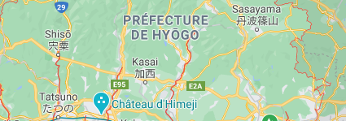

Destination Hyōgo
City
Hyōgo-ken is a prefecture of Japan located in the Kansai region of Honshu.[1] Hyōgo Prefecture has a population of 5,469,762 (as of 1 June 2019) and has a geographic area of 8,400 square kilometres (3,200 sq mi). Hyōgo Prefecture borders Kyoto Prefecture to the east, Osaka Prefecture to the southeast, and Okayama Prefecture and Tottori Prefecture to the west.
